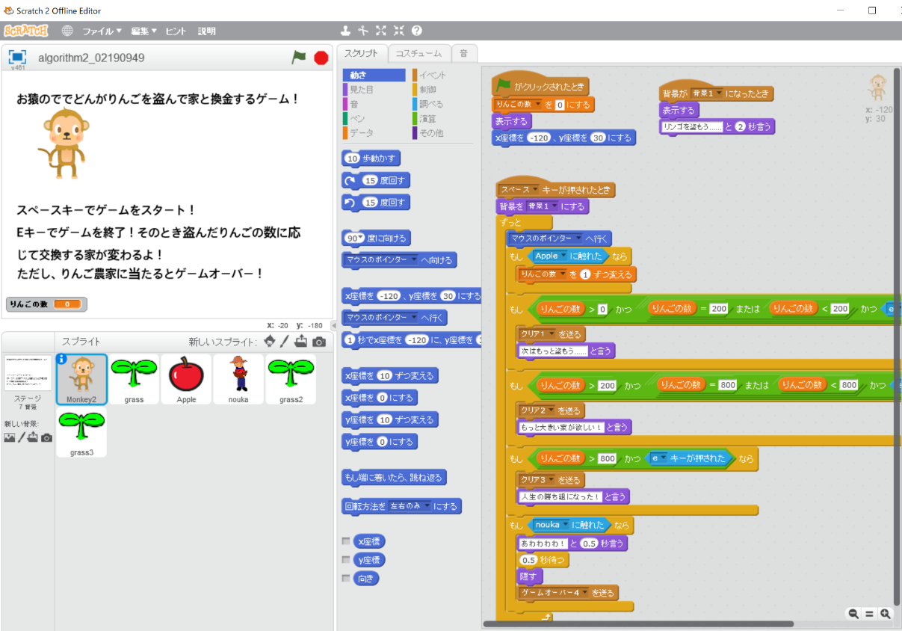

田中 a.k.a NAT
国立大修士1年生．大学院での研究分野はIoTと環境音分析の2つ．
情報セキュリティ業界に就職し，業界を盛り上げたい．
Skill
応用情報技術者試験合格
2022年秋期試験で合格．
現在は情報処理安全確保支援士試験合格に向けて勉強中．
Basic SecCap 10
北海道大学，慶應義塾大学，東北大学，情報セキュリティ大学院大学の授業を受け，実践的なセキュリティ人材を育成するプログラムを修了した． 2022年度に北海道地区で Basic SecCap 10を取得したのは僕を含めて2人だった．
TOEIC 755点
大学院入試のために2022年2月 TOEIC を受験．3ヶ月間毎日英語に触れたことが功を奏したと感じている． 早く就活を終えて800点，850点を超える勉強を始めたい．
プログラミング
研究と競技プログラミングで Python を使用．ハッカソンやインターンシップの開発でも使用した．C++ も一応使える．就活が終わったら Java と Go言語を勉強したい． ある企業のコーディングテストに落ちたため自信をなくした．
Works
ゲーム制作 
卒業論文および学会発表
VS.ペアレンツ
Qiita
IPPON PROFILE GENERATOR
Experience
仮面浪人
興味のある分野について，より切磋琢磨できる環境に身を置きたいと考えて仮面浪人を決意．スキマ時間に勉強を重ね，仮面先でフル単を達成しつつ，本命の大学に合格．
大学院入学試験および資格試験
学部生時代に高い成績をとったおかげで大学院の入学試験を免除． 入試勉強をしなくてよくなった分の時間ができたため資格試験の勉強時間に充てて，そちらも合格．
卒業研究とハッカソン
2023年1月，卒業研究に追われながらハッカソンにも参加．
3月には卒業研究の続きで海外との共同実験．
サマーインターンシップ
メガバンクのグループIT会社や情報セキュリティ会社など 2 days - 2 weeksのインターンシップに参加した． 基本的なウォーターフォール型開発の全工程を経験できた．
就職活動
2023年12月現在，情報セキュリティ業界に就職することを夢見て活動中．